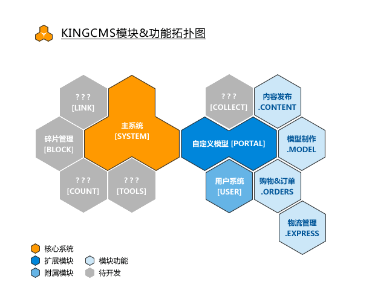

了解KingCMS
当前版本的KingCMS是一款基于PHP+MySQL的网站内容管理系统。
从2004年开发ActiveCMS到ASP版的KingCMS，一直到现在的PHP版，KingCMS实现了从ASP到PHP的转向，在此过程中KingCMS一向注重于用户使用体验，SEO优化。
新的PHP开始除了保留以上的特点外，更是增加了更灵活的界面定制能力。
系统特色
- 良好的浏览器兼容性：专门针对IE6/IE7/Firefox/Opera/Safari等主流浏览器进行了优化。
- 精致小巧：文件的数量少又小，快速部署网站。
- 良好的定制能力：系统的界面、菜单构成、语言环境等随意进行修改。
- 模块+插件设计：按需扩展功能模块及插件。
- 多语言支持：xml语言包,无需修改系统源码即可支持多语言。
- 域名绑定：绑定不限数量的域名到栏目，一站式管理多站。
- 以上仅仅为冰山一角，更多特点等待您去发掘……
模块
模块是KingCMS实现功能的核心单元。
PHP程序员可以根据自己需要编写模块，而无需修改KingCMS系统文件。
模块的目录是放在系统根目录下面，和系统目录system是一个等级的。
模块目录下面，必须有语言包文件夹language，模块的类文件inc.class.php和管理页面manage.php构成。
管理相关的php文件，建议命名方式为 manage.[功能].php ，以便和前置功能程序做区分。
系统默认带的模块有如下几种：
- 主系统(system)
- 集管理员登陆，系统设置等基本应用平台，也就是核心平台。
- 自定义模型(portal)
- 可以根据需要定义文章、论坛等功能模型。
集文章发布等常见功能外，有标签管理，栏目域名绑定等功能。
- 用户系统(user)
- 用户系统是作为自定义模型的子模块的方式提供，不能单独删除。
通过用户系统，可以设置用户注册，登录等基本功能及UCenter整合等高级功能。
- 碎片管理(block)
- 即原广告模块，标签方式输出预设的代码，支持html、javascript、iframe等多种嵌入方式。
插件
插件是模块的功能扩展，可以进一步扩展默认功能外的所需功能，或可以创建一个独立的模块来进行扩展。
- 目录结构
- 插件无需安装，仅仅是单独的PHP文件，仅作为模块的功能补充。
插件不会直接被系统所识，需要手工建立链接。
若要扩展管理功能的话，建议用模块形式扩展；若要扩展前台用户功能，可以用插件。
模块功能拓扑图
